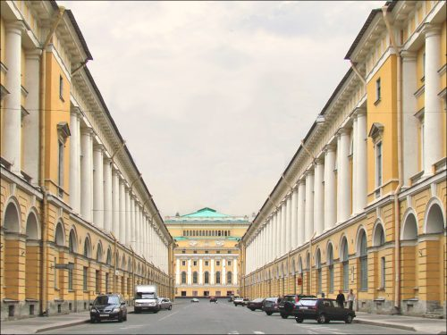
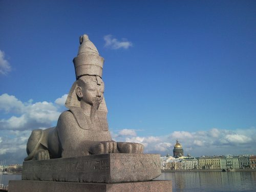
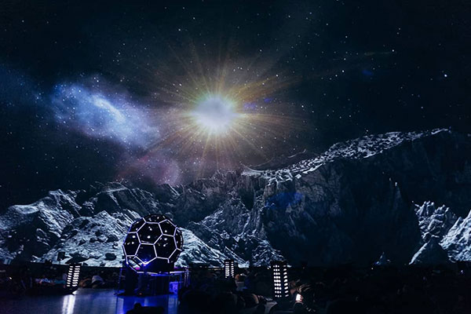
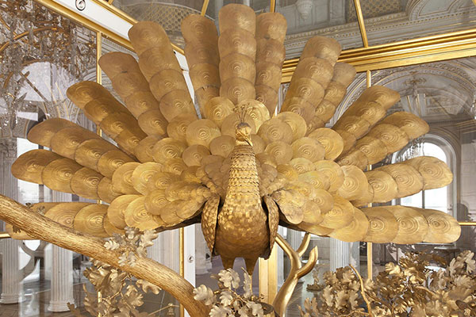
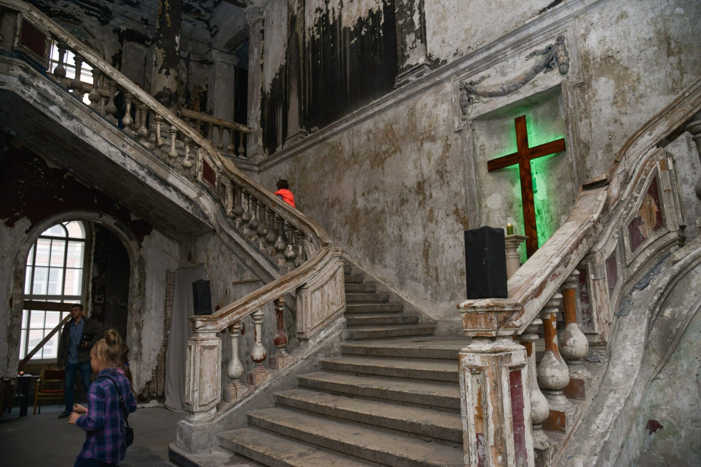
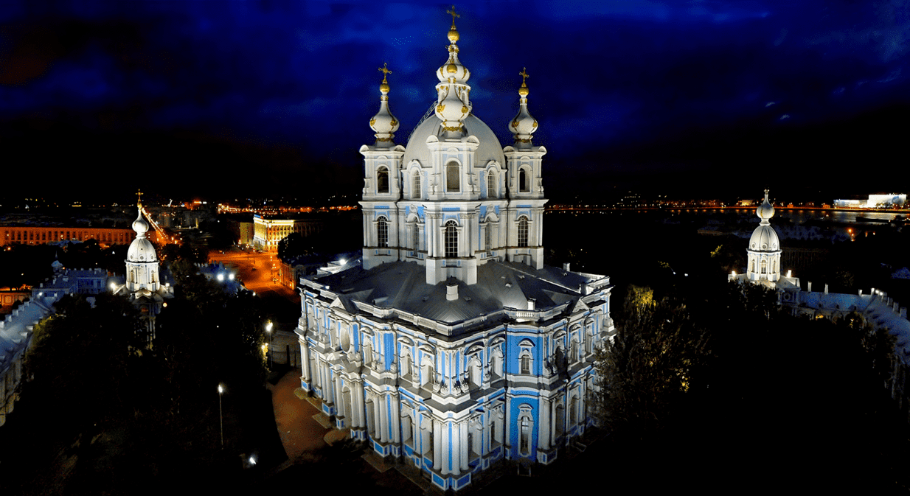
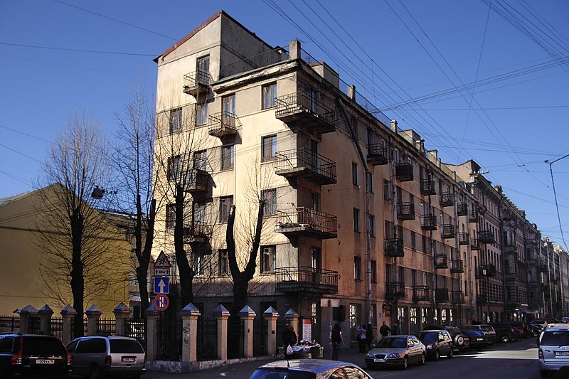

Интересные места Санкт-Петербурга
Ботанический сад

Это уникальное место, расположенная в центральной части города. На острове Петра Великого. Он является самым из старейших в России. Здесь приятно гулять в любое время года, сад включает в себя крытые и открытые помещения.
Ботанический сад не просто уникальный исторический объект, это еще и центр научных исследований в области ботаники. Здесь проходят образовательные программы и мероприятия для посетителей любого возраста.
Улица Зодчего
На этой необычной улице пять зданий, а кажется, что только два, по одному с каждой стороны. У всех зданий абсолютно одинаковый фасад, но главная изюминка не в этом.
А в том, что это самая симметричная улица в России и вероятно в мире.Судите сами: ширина улицы равна высоте ее зданий — 22 метра. А длина улицы 220 метров, что ровно в 10 раз больше ширины. Идеальное архитектурное пространство!
Сфинксы на Университетской набережной
Про сфинксов ходит много легенд, одна противоречивее другой. Но если будете гулять в этом месте, обратите внимание на выражение лица статуй: говорят, в хорошую погоду они словно улыбаются, а в пасмурную становятся суровыми.
К тому времени привезенные из Египта сфинксы уже 2 года пылились во дворе Академии художеств, ждали, пока набережная оденется в гранит.
Планетарий № 1
Планетарий №1 в Санкт-Петербурге открылся в 2017 году в здании старинного газгольдера. Его купол диаметром 37 метров и система из 40 проекторов создают потрясающее изображение космических явлений и явлений на нашей планете.
Посетители получают возможность увидеть звездное небо таким, каким его невозможно рассмотреть в мегаполисе, и погрузиться в происходящие во Вселенной процессы благодаря мультимедийному контенту от лучших дизайн-студий мира.
Золотой павлин в Эрмитаже
Настоящий шедевр инженерного и художественного искусства. Они были изготовлены в XVIII веке в Англии. В Санкт-Петербург они попали по инициативе князя Григория Потемкина, который хотел сделать роскошный подарок императрице
Екатерине II. Сегодня часы являются визитной карточкой Эрмитажа – увидеть работу уникального старинного механизма можно каждую среду в 19:00.
Анненкирхе
Одно из самых удивительных мест в центральной части Петербурга. Лютеранская церковь в центре города, недалеко от Марсова поля и Летнего сада.
Ее история началась еще в 1704 году, когда было построено первое деревянное здание. Нынешнее возвели в 1775-1779 годах и оно служило верующим, пока не случилась революция.
Во времена СССР тут размещался кинотеатр, а в 2002 году здание сгорело.
Звонница Смольного собора
Звонница Смольного собора по первоначальному проекту должна была вырасти выше шпиля Петропавловской крепости. Планам этим не суждено было сбыться, что не мешает Смольному собору выглядеть настоящим шедевром стиля
елизаветинского барокко. Если вы уже побывали на смотровой площадке Исаакиевского собора, то не откажите себе в удовольствии посетить это место. Можно подняться на смотровую площадку звонницы — тут и людей меньше,
а обзор ничуть не хуже: перед вами раскинутся Петербург и Нева, и вы увидите множество главных достопримечательностей города с высоты 50 метров.
«Слеза социализма»
Дом-коммуну молодых писателей и инженеров построили 1931 году. Здание для своего времени стало новаторским. Однако, дом оказался настолько неудобен даже для весьма убежденных сторонников советского строя, что его прозвали
«Слезой коммунизма». Для слез тут поводов хватало. Желая создать дом-прорыв в светлое коммунистическое будущее, архитекторы решили обобществить быт.
И в результате в квартирах обошлись без кухонь — была общая столовая на все 200 жильцов, а туалеты размещались по одному на этаж. В 1960-х годах дом перепланировали, и теперь у всех жильцов с бытом все в порядке.